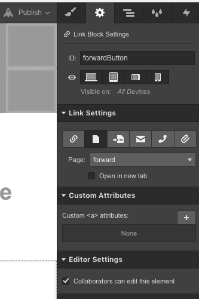
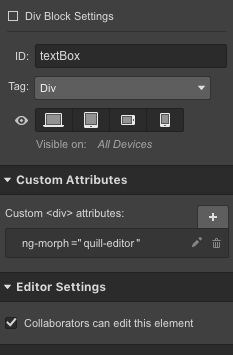
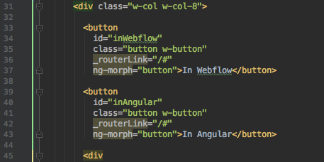
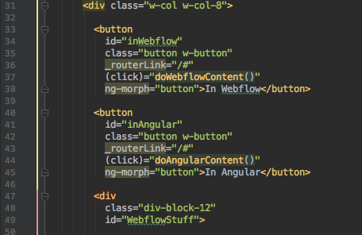
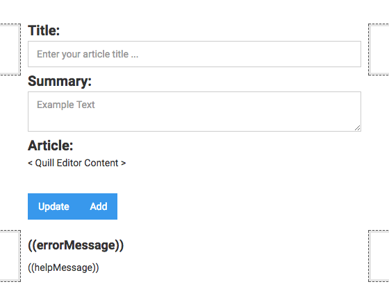
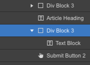
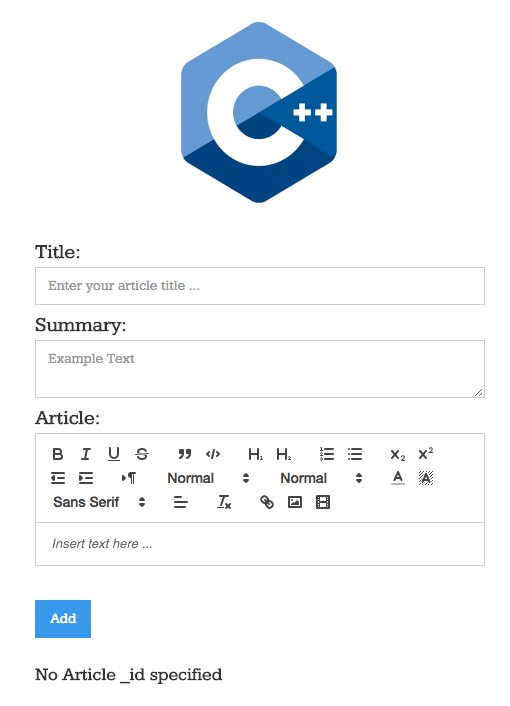

What is ng-morph?
ng-morph
Sometimes Webflow does things that are not ideal for your application. Turning <button> links into <a> links is one of them. Sometimes you want a <button> to be a <button>. FreeFormJS has a special way of doing that for you:
Why use ng-morph?
There are certain features of Webflow that may not be an ideal for you. Take for example the <button> tag. By default Webflow only produces <a> tags instead of a <button>. This is entirely fine so long as you never find yourself in a situation where you need to disable a <button> tag. To resolve this situation FreeFormJS provides you with a ng-morph tag to use with your converted code.
ng-morph
Third-party JavaScript Library support
Another application of ng-morph is in the case where you'd like to use a popular JavaScript framework with your application but there isn't a way to have that represented in your Webflow project by default. The popular quill-editor package is a classic example of this. With ng-morph, you can easily embed custom HTML tags from popular JavaScript libraries or even add your own.
Step by step:
- All you have to do is identify what elements need to be morphed while in the Webflow project and make sure that it has an id tag.
- Once inside your Angular 2 project, simply place an ng-morph='whatever' and FreeFormJS takes care of the rest.
- You will have to do another conversion after you've added the ng-morph tag for it to take effect.
- HTML also has a name field along with the id field. In Webflow, it may try to make the two of these different. It's a good idea to make sure both the name field and the id field are the same, but it's not necessary for conversion. It may only become an issue with Angular 2 to have a different value inside the name attribute as oppose to the id attribute.
In WebflowIn Angular 2ex. Quill Editor
In Webflow:
All you have to do is make sure the element you wish to morph has an id tag assigned:

Highlight the FORWARD button using Webflow's editor:

With the selected button highlighted you will see the item also selected in your right panel. In this particular case, you want to actually select the Link Block associated with the menu item.

Adding an id to either will work, but for simplicity you may want to use the Link Block instead of the button. It's a choice you can make, in this example we use the Link Block:

Once there, simply add a value to the id field and you are done!

In Angular 2:
With the id added to the <div> that you want to morph, you can do two things. You can add the ng-morph tag inside the Webflow editor or you can wait and add it inside you Angular 2 code. Whatever is more convenient for you:

While it's not necessary for this example, we just happen be using a <button> here but Webflow uses <a> tags for buttons. As an option you might like to use the actually <button> tag. If you plan on disabling the button at some point, it's no longer an option, you need to morph the <a> tag into a <button>. To do this simply add the ng-morph attribute:

Do another download from Webflow and then FreeFlowJS and notice how ng-morph has updated your <a> tags to <button> tags.

Also notice that there are no href attributes. The href attibutes of the <a> tag have been converted into the routerLink of Angular 2 for you:
Sometimes however, you do not need either the href nor the routerLink. Sometimes you just need the <button> to be a <button> where you'll add a standard Angular 2 (click) attribute instead. To disable the routerLink all you have to do is add a '_' in front of the routerLink attribute.

Usually you do this because the button is going to be used for a (click) operation as such:

In Quill Editor:
Another benefit of ng-morph is the ability to add 3rd party JavaScript libraries to your application. The Quill Editor is one such library and just like many popular JavaScript libraries they like to integrate with your application using a custom name tag. To do this with FreeForm simply mark a section in your Webflow project with an id that you can recognize in your Angular 2 application. Inside your Webflow project simply add a <div> and give that <div> an id. For simplicity you can add a text field there to mark the spot where the Quill Editor will go:

Now you want to add the id to the <div> and not the text field you are using to help you see where they Quill Editor will show up in your Angular 2 application:

Simply add an id to the <div> where you want the Quill Editor to go:
In the above image you'll see the ng-morph added as a custom attribute. You can do it that way or you can simply add it inside you code editor after your convert it:

Isn't it a nice experience when you can add a third party library like the Quill Editor with little to no fuss!